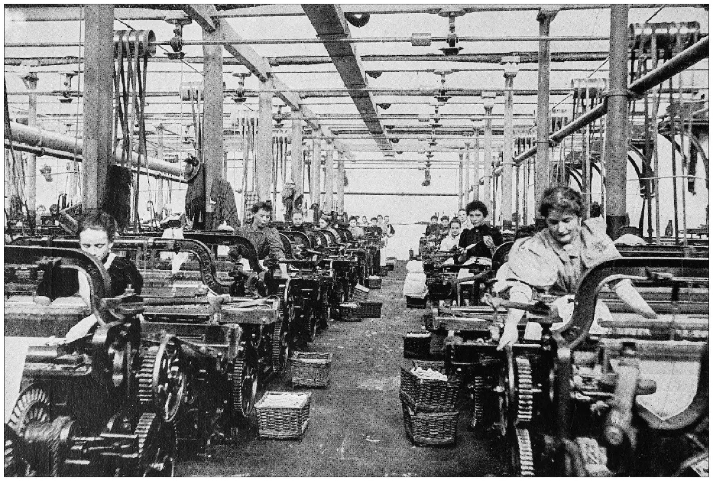
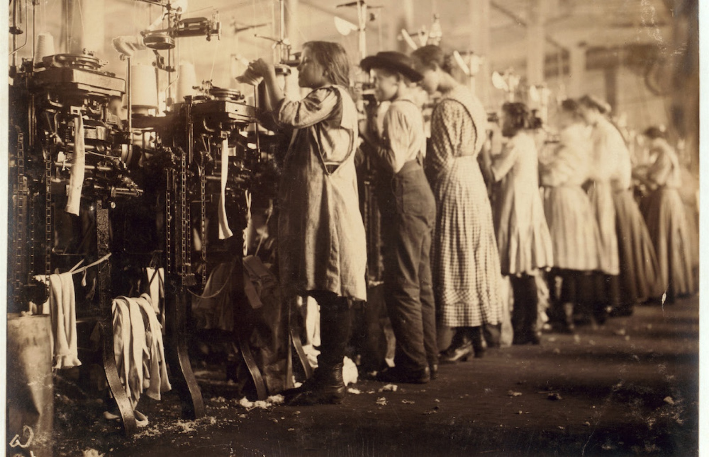
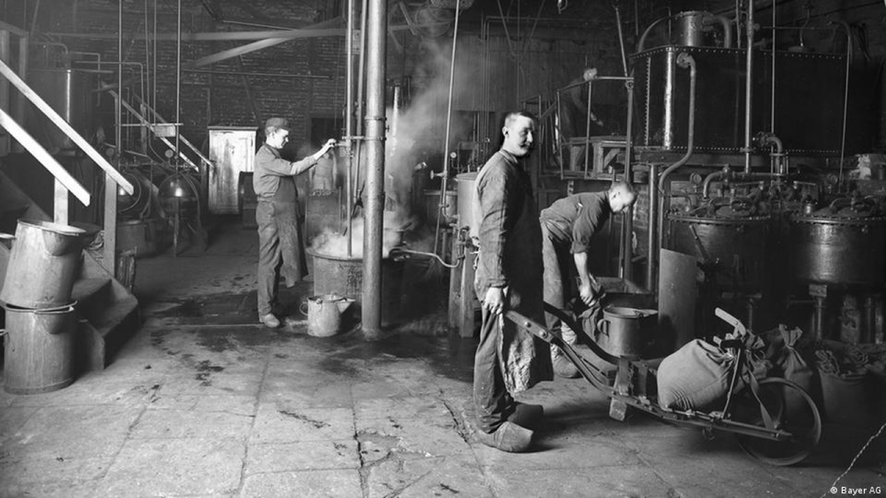
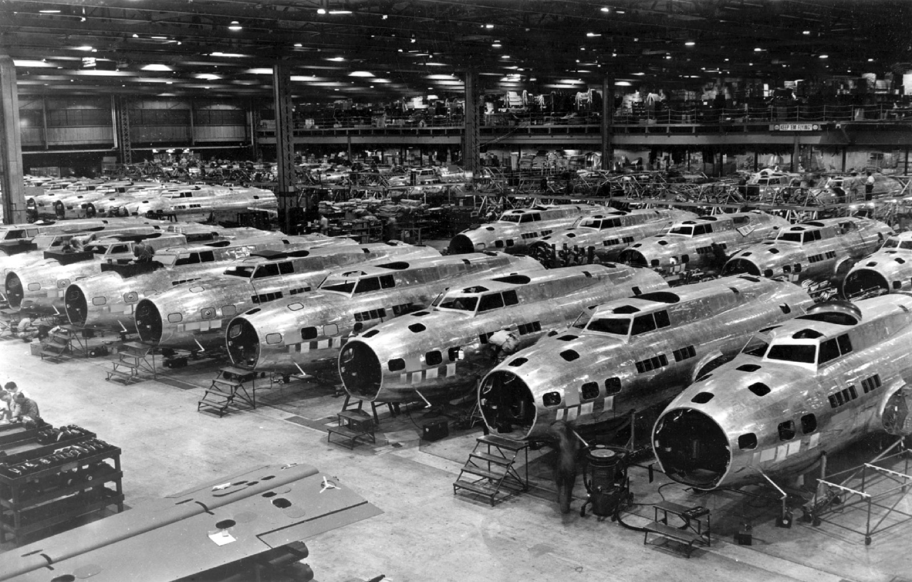
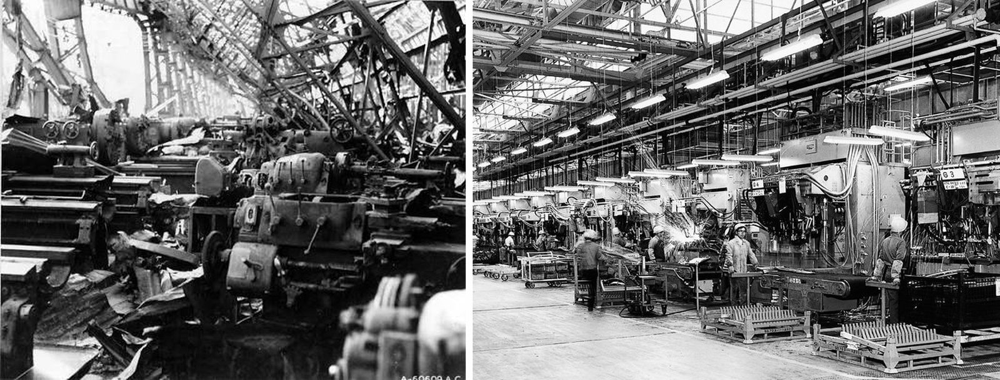
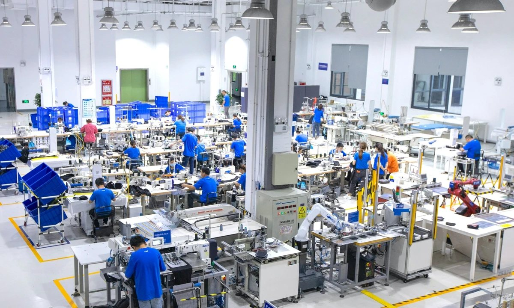

The world order is determined by hardware and manufacturing.
Every nation that rose to lead the world order did so on the back of a manufacturing transformation. Five cases, 250 years, and what the pattern says about the next one.

I believe that nothing matters more in determining the world order than industrial capacity. The pattern is very clear across history: every nation that rose to lead the world order did so on the back of a manufacturing transformation. Ideology, finance, and diplomacy mattered, but they were the superstructure. The foundation was industrial capacity. Let me walk you through a few examples.
Britain, from the 1750s
In 1750, Britain was a mid-sized European power. By 1860, this island with roughly 2% of the world’s population was producing about 20% of the world’s manufactured goods, half its iron, and half its cotton textiles.1 The cause was not empire, the empire came after. It was a cluster of compounding process innovations: Watt’s separate condenser made steam economical, Cort’s puddling process made wrought iron cheap, and the factory system reorganized labor around machines rather than machines around labor.

The consequence was that industrial surplus financed naval supremacy, naval supremacy secured trade routes, and trade routes fed the factories. Pax Britannica was, at its core, a manufacturing phenomenon. When Britain’s industrial lead eroded in the late nineteenth century, as its share of world manufacturing fell behind newer rivals, its geopolitical primacy eroded on roughly the same curve.
Germany, from the 1870s
Germany unified in 1871 as a latecomer and chose a different path: rather than replicate Britain’s first revolution, it led the second. The Ruhr’s coal and the Rhine’s logistics were the base, but the differentiator was the systematic coupling of science to industry. German firms like BASF and Bayer effectively invented the corporate research laboratory. By 1913, Germany produced more steel than Britain and France combined and dominated the global chemical and electrical industries.2

Germany also pioneered institutional capability building: the technical universities, the apprenticeship system, and the research labs formed a machine for converting knowledge into production. Nations that copied the factories without copying the institutions rarely caught up.
America, from the 1890s
The United States passed Britain in industrial output around 1890, decades before it accepted a leading role in world affairs. The American contribution was manufacturing as a discipline in its own right: interchangeable parts, Taylor’s scientific management, and Ford’s moving assembly line, which cut the build time of a Model T chassis from over twelve hours to about ninety minutes.3

That capacity became decisive during the Second World War. American factories produced roughly 300,000 aircraft and delivered Liberty ships in weeks rather than years.4 None of this diminishes the soldiers, sailors, and civilians who bore the actual cost of the war. But it is also true that Allied strategists could plan operations knowing that materiel lost would be replaced, and Axis strategists increasingly could not. Production did not win the war by itself; it determined what the people fighting it had to fight with.
The post-war order, Bretton Woods, the dollar, the alliance system, was designed by the country that at that moment accounted for roughly half of global manufacturing output.5 That is not a coincidence of timing. It is the mechanism.
Japan, rebuilding after the war
Japan’s post-war rise is perhaps the purest demonstration that manufacturing capability, not resource endowment, drives national trajectory. A country with almost no oil, iron ore, or arable land surplus became the world’s second-largest economy within four decades. It did so by out-engineering the incumbents on process: the Toyota Production System, statistical quality control, adopted from W. Edwards Deming’s ideas more seriously than his own country adopted them, and relentless incremental improvement.

By the 1980s, Japanese firms had taken commanding positions in automobiles, consumer electronics, machine tools, and semiconductors, and American industrial policy debates of that decade read almost identically to today’s debates about China.
China, the manufacturing powerhouse of the world
China is the first nation to have studied all four previous cases and executed the playbook consciously. Four decades of infrastructure buildout, technology transfer, process learning, and scale accumulation have made China the manufacturing base of the world, around 30% of global manufacturing value added, more than the United States, Japan, and Germany combined.6 In batteries, solar, shipbuilding, electric vehicles, the lead is no longer just marginal. China builds more ships in a year than the United States builds in a decade.7

Whatever one’s view of the geopolitics, the causal arrow is the same one that ran through Manchester, the Ruhr, Detroit, and Toyota City: production capacity first, strategic weight second.
What history teaches us
Manufacturing sits upstream of nearly everything a nation cares about. Mining and agricultural output require equipment to be manufactured. Infrastructure requires raw materials and equipment to be manufactured. Healthcare requires medicines, and medical devices and equipment to be manufactured. Energy requires turbines, solar panels, and grid hardware to be manufactured. Mobility requires vehicles to be manufactured. Defense is manufactured, every shell, every drone, every platform. Ukraine’s drone war is the current, sobering proof that the side which produces faster, iterates better, and delivers cheaper reshapes the battlefield itself. Trade balance, the resilience of supply chains in a crisis: all of it reduces, eventually, to what a country can make. Lose the ability to make things, and every other form of power becomes temporary.
History adds a harder warning: industrial leadership, once lost, has never been regained. Britain never recovered its share. America’s reshoring efforts, decades in, remain a fraction of what left. The decline is a ratchet, because the know-how walks out the door with the workforce, the tolerances, the failure modes, the thousand small judgments that never made it into any manual, and it does not walk back in. Reshoring policy can rebuild buildings. It cannot quickly rebuild forty years of accumulated know-how.
Why almost nothing will matter as much
If the pattern holds, and it has held for 250 years, the next world order will be set by whoever leads the next industrial revolution. That revolution is now visible: Physical AI, pointing toward a future where design and manufacturing become significantly automated.
And it may be the last such revolution. Every previous one multiplied human labor, which meant a latecomer could always catch up by mobilizing more of it, more cheaply. That was Japan’s route, and China’s. Physical AI is different in kind: it points toward the limits of labor productivity itself, where output is no longer constrained by headcount at all. When that threshold is crossed, the catch-up path that every previous riser used disappears. This is not one race among many. It is likely the last one where the starting line is still open.
The world outside China enters it with a genuine handicap. Manufacturing workforces in the United States, Europe, and Japan are aging out faster than they are being replaced, and labor costs are multiples of those in Asia. The ratchet is already in motion.
This is precisely why a system like NEMI’s Large Manufacturing Model matters: it multiplies what a smaller, more expensive workforce can do. For economies that cannot win on labor cost or headcount, that is not an efficiency gain, it is the only available equalizer. Adopting it is not a modernization initiative; it is the price of staying relevant.
Sources
- Shares of world manufacturing output, 1750–1900: Paul Bairoch, “International Industrialization Levels from 1750 to 1980”, Journal of European Economic History, 1982. ↩
- German steel output and the chemical and electrical industries to 1913: standard economic histories of the Kaiserreich; figure to be tied to a named source before publication. ↩
- Model T chassis assembly time before and after the moving line: Ford Motor Company historical records. ↩
- US wartime aircraft production and Liberty ship build times: US wartime production statistics. ↩
- US share of global manufacturing output in the immediate post-war years. ↩
- China’s share of global manufacturing value added: UNIDO and World Bank data. ↩
- Comparative shipbuilding output, China and the United States. ↩
Forward-looking statements. This post contains forward-looking statements, including statements about NEMI’s plans, products and future performance. They reflect current beliefs, are not guarantees, and actual results may differ materially. NEMI undertakes no obligation to update them except as required by law.